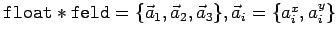
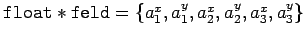
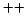

Nächste Seite: Public member von Fluid Aufwärts: Anwendung Vorherige Seite: Benötigte Dateien Inhalt

heißt
. steht hier übrigens nicht für die mathematische Mengenklammer, sondern stellt eine C
Feldzuweisung dar.